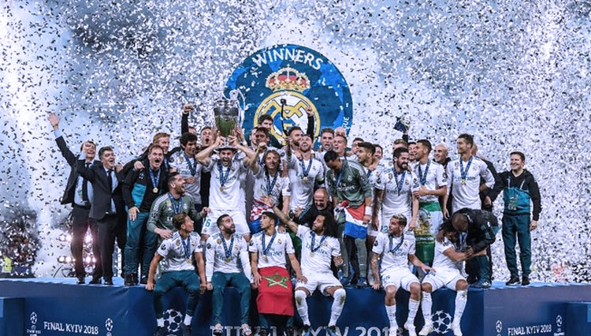

Tentang Real Madrid

Real Madrid Club de Fútbol adalah sebuah klub sepak bola profesional yang berbasis di Madrid, Spanyol. Didirikan pada tanggal 6 Maret 1902, klub ini dikenal dengan julukan Los Blancos
(Tim Putih) dan Los Merengues
(Tim Meringue). Klub ini telah menjadi salah satu klub sepak bola terbesar dan tersukses di dunia.
Julukan Los Blancos
berasal dari warna seragam kebanggsaan mereka yang serba putih. Real Madrid dikenal dengan prestasi yang luar biasa di berbagai kompetisi sepak bola internasional, termasuk dalam Liga Champions UEFA. Klub ini pernah memasuki era Galacticos, yaitu era di mana Real Madrid merekrut pemain bintang dunia seperti Zinedine Zidane, Ronaldo, Luis Figo, Roberto Carlos hingga David Beckham.
Saat ini, Real Madrid diakui sebagai klub sepak bola terbaik di abad ke-20. Real Madrid adalah satu-satunya klub yang memenangkan tiga gelar berturut-turut di Liga Champions UEFA dan satu-satunya klub yang memenangkan La Décima.